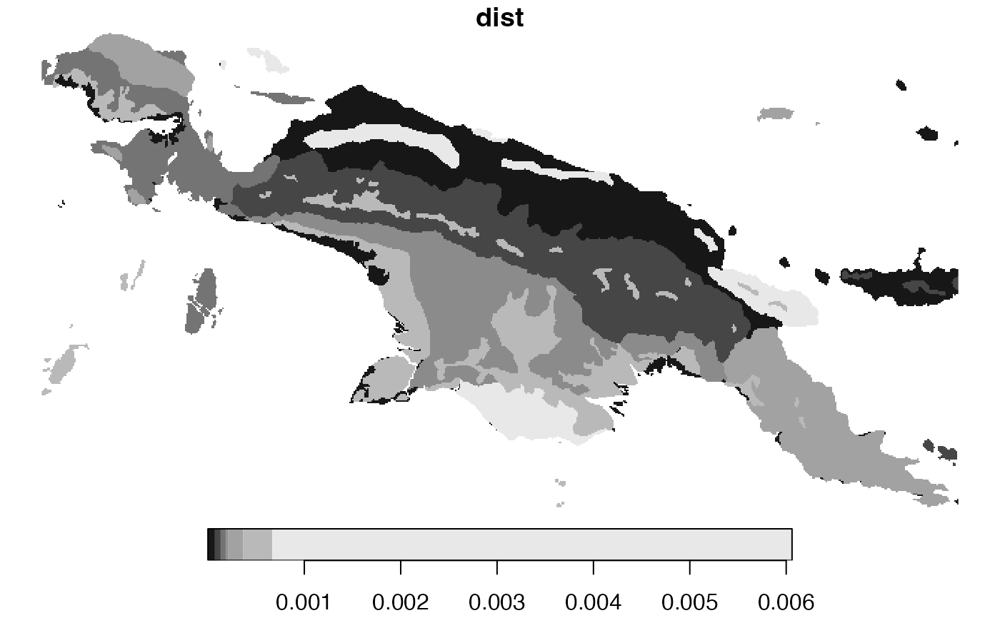
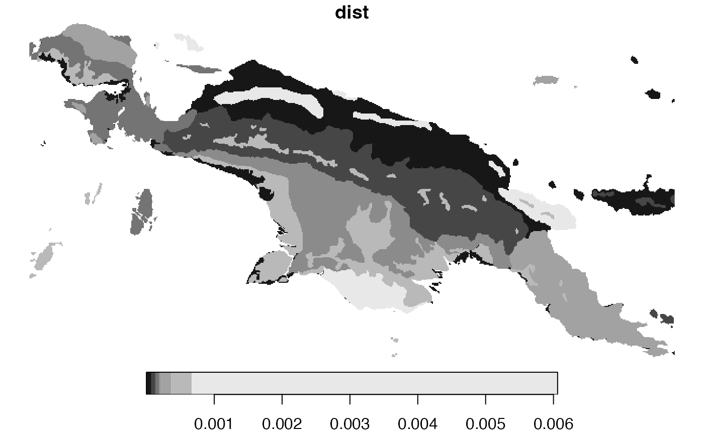

Compares two spatial datasets containing categorical raster data.
It accepts a categorical raster dataset with one or more attributes, and compares it to the second dataset with the same attributes and dimensions.
The both dataset are either compared to as whole areas, areas divided into regular windows, or areas divided into irregular windows.
This function allows for several types of comparisons using different representations of spatial patterns, including "coma" (co-occurrence matrix), "cove" (co-occurrence vector), "cocoma" (co-located co-occurrence matrix), "cocove" (co-located co-occurrence vector), "wecoma" (weighted co-occurrence matrix), "wecove" (weighted co-occurrence vector), "incoma" (integrated co-occurrence matrix), "incove" (integrated co-occurrence vector). These representations are created for both datasets, and next a distance between them is calculated using a selected measure from the philentropy::distance function.
Additional parameters, such as neighbourhood or normalization types, are also available.
lsp_compare(
x,
y,
type,
dist_fun,
window = NULL,
output = "stars",
neighbourhood = 4,
threshold = 0.5,
ordered = TRUE,
repeated = TRUE,
normalization = "pdf",
wecoma_fun = "mean",
wecoma_na_action = "replace",
...
)Arguments
- x
Object of class
stars,stars_proxy, or terra'sSpatRaster. It should have one attribute (for"coma","cove"), two attributes ("cocoma","cocove","wecoma","wecove"), two or more attributes ("incoma","incove"), or any number of attributes suitable for user-defined functions.- y
Object of class
stars,stars_proxy, or terra'sSpatRaster. It should have one attribute (for"coma","cove"), two attributes ("cocoma","cocove","wecoma","wecove"), two or more attributes ("incoma","incove"), or any number of attributes suitable for user-defined functions.- type
Type of the calculated signature. It can be
"coma"(co-occurrence matrix),"cove"(co-occurrence vector),"cocoma"(co-located co-occurrence matrix),"cocove"(co-located co-occurrence vector),"wecoma"(weighted co-occurrence matrix),"wecove"(weighted co-occurrence vector),"incoma"(integrated co-occurrence matrix),"incove"(integrated co-occurrence vector),"composition"or any function that can summarizestarsobjects.- dist_fun
Distance measure used. This function uses the
philentropy::distancefunction in the background. Runphilentropy::getDistMethods()to find possible distance measures.- window
Specifies areas for analysis. It can be either:
NULL, a numeric value, or ansfobject. Ifwindow=NULLcalculations are performed for a whole area. If thewindowargument is numeric, it is a length of the side of a square-shaped block of cells. Expressed in the numbers of cells, it defines the extent of a local pattern. If ansfobject is provided, each feature (row) defines the extent of a local pattern. Thesfobject should have one attribute (otherwise, the first attribute is used as an id).- output
The class of the output. Either
"stars","sf", orterra- neighbourhood
The number of directions in which cell adjacencies are considered as neighbours: 4 (rook's case) or 8 (queen's case). The default is 4.
- threshold
The share of NA cells to allow metrics calculation.
- ordered
For
"cove","cocove","wecove"and"incove"only. The type of pairs considered. Either "ordered" (TRUE) or "unordered" (FALSE). The default is TRUE.- repeated
For
"incove"only. Should the repeated co-located co-occurrence matrices be used? Either "ordered" (TRUE) or "unordered" (FALSE). The default is TRUE.- normalization
For
"cove","cocove","wecove","incove","composition", or user-provided functions only. Should the output vector be normalized? Either "none" or "pdf". The "pdf" option normalizes a vector to sum to one. The default is "pdf".- wecoma_fun
For
"wecoma"and"wecove"only. Function to calculate values from adjacent cells to contribute to exposure matrix,"mean"- calculate average values of local population densities from adjacent cells,"geometric_mean"- calculate geometric mean values of local population densities from adjacent cells, or"focal"assign a value from the focal cell- wecoma_na_action
For
"wecoma"and"wecove"only. Decides on how to behave in the presence of missing values inw. Possible options are"replace","omit","keep". The default,"replace", replaces missing values with 0,"omit"does not use cells with missing values, and"keep"keeps missing values.- ...
Additional arguments for the
philentropy::distancefunction.
Value
Object of class stars (or sf or terra's SpatRaster, depending on the output argument).
It has four attributes:
(1) id - an id of each window.
For irregular windows, it is the values provided in the window argument,
(2) na_prop_x - share (0-1) of NA cells for each window in the x object,
(3) na_prop_y - share (0-1) of NA cells for each window in the y object,
(4) dist- calculated distance between signatures for each window
Examples
library(stars)
lc15 = read_stars(system.file("raster/landcover2015s.tif", package = "motif"))
lc01 = read_stars(system.file("raster/landcover2001s.tif", package = "motif"))
ecoregions = read_sf(system.file("vector/ecoregionss.gpkg", package = "motif"))
ecoregions = st_transform(ecoregions, st_crs(lc15))
c1 = lsp_compare(lc01, lc15, type = "cove",
dist_fun = "jensen-shannon", window = ecoregions["id"])
#> Metric: 'jensen-shannon' using unit: 'log2'.
plot(c1["dist"])
 # \donttest{
# larger data example
library(stars)
lc15 = read_stars(system.file("raster/landcover2015.tif", package = "motif"))
lc01 = read_stars(system.file("raster/landcover2001.tif", package = "motif"))
ecoregions = read_sf(system.file("vector/ecoregions.gpkg", package = "motif"))
ecoregions = st_transform(ecoregions, st_crs(lc15))
c1 = lsp_compare(lc01, lc15, type = "cove",
dist_fun = "jensen-shannon", window = ecoregions["id"])
#> Metric: 'jensen-shannon' using unit: 'log2'.
plot(c1["dist"])
#> downsample set to 10

# }
# \donttest{
# larger data example
library(stars)
lc15 = read_stars(system.file("raster/landcover2015.tif", package = "motif"))
lc01 = read_stars(system.file("raster/landcover2001.tif", package = "motif"))
ecoregions = read_sf(system.file("vector/ecoregions.gpkg", package = "motif"))
ecoregions = st_transform(ecoregions, st_crs(lc15))
c1 = lsp_compare(lc01, lc15, type = "cove",
dist_fun = "jensen-shannon", window = ecoregions["id"])
#> Metric: 'jensen-shannon' using unit: 'log2'.
plot(c1["dist"])
#> downsample set to 10

# }